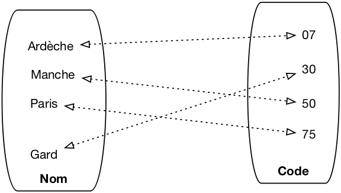
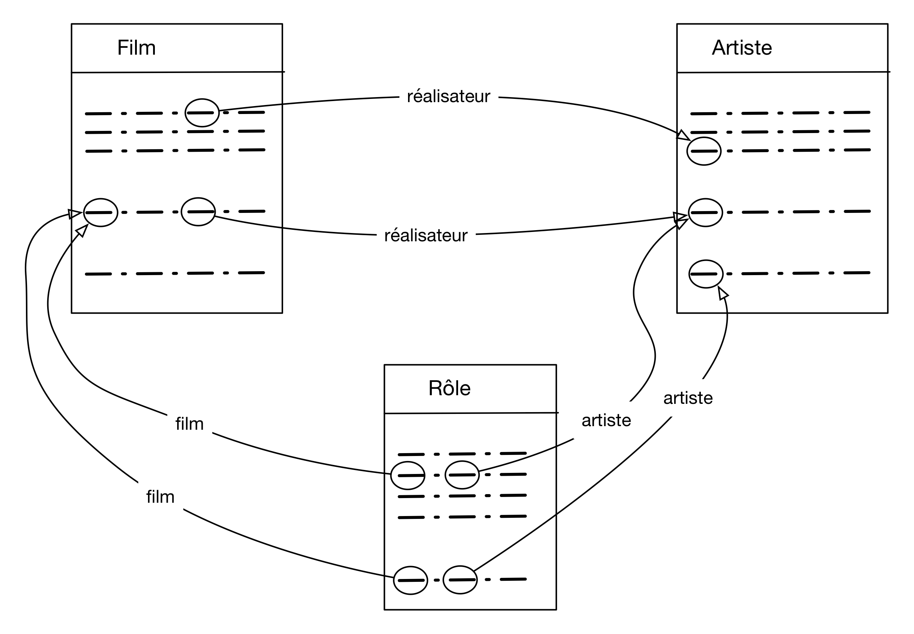

Le modèle relationnel¶
Qu’est-ce donc que ce fameux « modèle relationnel »? En bref, c’est un ensemble de résultats scientifiques, qui ont en commun de s’appuyer sur une représentation tabulaire des données. Beaucoup de ces résultats ont débouché sur des mises en œuvre pratique. Ils concernent essentiellement deux problématiques complémentaires:
La structuration des données. Comme nous allons le voir dans ce chapitre, on ne peut pas se contenter de placer toute une base de données dans une seule table, sous peine de rencontrer rapidement des problèmes insurmontables. Une base de données relationnelle, c’est un ensemble de tables associées les unes aux autres. La conception du schéma (structures des tables, contraintes sur leur contenu, liens entre tables) doit obéir à certaines règles et satisfaire certaines proprietés. Une théorie solide, la normalisation a été développée qui permet de s’assurer que l’on a construit un schéma correct.
Les langages d’interrogation. Le langage SQL que nous connaissons maintenant est issu d’efforts intenses de recherche menés dans les années 70-80. Deux approches se sont dégagées: la principale est une conception déclarative des langages de requêtes, basées sur la logique mathématique. Avec cette approche on formule (c’est le mot) ce que l’on souhaite, et le système décide comment calculer le résultat. La seconde est de nature plus procédurale, et identifie l’ensemble minimal des opérateurs dont le système doit disposer pour évaluer une requête. C’est cette seconde approche qui est utilisée en interne pour construire des programmes d’évaluation
Dans ce chapitre nous étudions la structure du modèle relationnel, soit essentiellement la représentation des données, les contraintes, et les règles de normalisation qui définissent la structuration correcte d’une base de données. Deux exemples de bases, commentés, sont donnés en fin de chapitre. Les chapitres suivants seront consacrés aux différents aspects du langage SQL.
S1: relations et nuplets¶
Supports complémentaires:
L’expression « modèle relationnel » a pour origine (surprise!) la notion de relation, un des fondements mathématiques sur lesquels s’appuie la théorie relationnelle. Dans le modèle relationnel, la seule structure acceptée pour représenter les données est la relation.
Qu’est-ce qu’une relation?¶
Etant donné un ensemble d’objets \(O\), une relation (binaire) sur \(O\) est un sous-ensemble du produit cartésien \(O \times O\). Au cas où vous l’auriez oublié, le produit cartésien entre deux ensembles \(A \times B\) est l’ensemble de toutes les paires possibles constituées d’un élément de \(A\) et d’un élément de \(B\).
Dans le contexte des bases de données, les objets auxquels on s’intéresse sont des valeurs élémentaires comme les entiers \(I\), les réels (ou plus précisément les nombres en virgule flottante puisqu’on ne sait pas représenter une précision infinie) \(F\), les chaînes de caractères \(S\), les dates, etc. La notion de valeur élémentaire s’oppose à celle de valeur structurée: il n’est pas possible en relationnel de placer dans une cellule un graphe, une liste, un enregistrement.
On introduit de plus une restriction importante: les relations sont finies (on ne peut pas représenter en extension un ensemble infini avec une machine).
L’ensemble des paires constituées des noms de département et et de leur numéro de code est par exemple une relation en base de données: c’est un ensemble fini, sous-ensemble du produit cartésien \(S \times I\).
La notion de relation binaire se généralise facilement. Une relation ternaire sur \(A\), \(B\), \(C\) est un sous-ensemble fini du produit cartésien \(A \times B \times C\), qui lui même s’obtient par \((A \times B) \times C\). On peut ainsi créer des relations de dimension quelconque.
Définition: relation
Une relation de degré n sur les domaines \(D_1, D_2, \cdots, D_n\) est un sous-ensemble fini du produit cartésien \(D_1 \times D_2 \times \cdots \times D_n\)
{kind=link}

Fig. 5 Une relation binaire représentée comme un graphe¶
Une relation est un objet abstrait, on peut la représenter de différentes manières. Une représentation naturelle est le graphe comme le montre la Fig. 5. Une autre structure possible est la table, qui s’avère beaucoup plus pratique quand la relation n’est plus binaire mais ternaire et au-delà.
nom |
code |
|---|---|
Ardèche |
07 |
Gard |
30 |
Manche |
50 |
Paris |
75 |
Dans une base relationnelle, on utilise toujours la représentation d’une relation sous forme de table. À partir de maintenant nous pourrons nous permettre d’utiliser les deux termes comme synonymes.
Les nuplets¶
Un élément d’une relation de dimension n est un nuplet \((a_1, a_2, \cdots, a_n)\). Dans la représentation par table, un nuplet est une ligne. Là encore nous assimilerons les deux termes, en privilégiant toutefois nuplet qui indique plus précisément la structure constituée d’une liste de valeurs.
La définition d’une relation comme un ensemble (au sens mathématique) a quelques conséquences importantes:
L’ordre des nuplets est indifférent car il n’y a pas d’ordre dans un ensemble; conséquence pratique: le résultat d’une requête appliquée à une relation ne dépend pas de l’ordre des lignes dans la relation.
On ne peut pas trouver deux fois le même nuplet car il n’y a pas de doublons dans un ensemble.
Il n’y a pas (en théorie) de « cellule vide » dans la relation; toutes les valeurs de tous les attributs de chaque nuplet sont toujours connues.
Dans la pratique les choses sont un peu différentes pour les doublons et les cellules vides, comme nous le verrons
Le schéma¶
Et, finalement, on notera qu’aussi bien la représentation par graphe que celle par table
incluent un nommage de chaque dimension (le nom du département, son code, dans notre
exemple). Ce nommage n’est pas strictement indispensable (on pourrait utiliser la position
par exemple), mais s’avère très pratique et sera
donc utilisé systématiquement.
On peut donc décrire une relation par
Le nom de la relation.
Un nom (distinct) pour chaque dimension, dit nom d’attribut, noté \(A_i\).
Le domaine de valeur (type) de chaque dimension, noté \(D_i\).
Cette description s’écrit de manière concise \(R (A_1: D_1, A_2: D_2, \cdots, A_n: D_n)\),
et on l’appelle le schéma de la relation. Tous les \(A_i\) sont distincts,
mais on peut bien entendu utiliser plusieurs fois le même type. Le schéma de notre table
des départements est donc Département (nom: string, code: string). Le domaine
de valeur ayant relativement peu d’importance, on pourra souvent l’omettre et écrire
le schéma Département (nom, code). Il est d’aileurs relativement facile de changer le type
d’un attribut sur une base existante.
Et c’est tout ! Donc en résumé,
Définition: relation, nuplet et schéma
Une relation de degré n sur les domaines \(D_1, D_2, \cdots, D_n\) est un sous-ensemble fini du produit cartésien \(D_1 \times D_2 \times \cdots \times D_n\).
Le schéma d’une relation s’écrit \(R (A_1: D_1, A_2: D_2, \cdots, A_n: D_n)\), R étant le nom de la relation et les \(A_i\), deux à deux distincts, les noms d’attributs.
Un élément de cette relation est un nuplet \((a_1, a_2, \cdots, a_n)\), les \(a_i\) étant les valeurs des attributs.
Et en ce qui concerne le vocabulaire, le tableau suivant montre celui, rigoureux, issu de la modélisation mathématique et celui, plus vague, correspondant à la représentation par table. Les termes de chaque ligne seront considérés comme équivalents, mais on privilégiera les premiers qui sont plus précis.
Terme du modèle |
Terme de la représentation par table |
|---|---|
Relation |
Table |
nuplet |
ligne |
Nom d’attribut |
Nom de colonne |
Valeur d’attribut |
Cellule |
Domaine |
Type |
Attention à utiliser ce vocabulaire soigneusement, sous peine de confusion. Ne pas confondre par exemple le nom d’attribut (qui est commun à toute la table) et la valeur d’attribut (qui est spécifique à un nuplet).
La structure utilisée pour représenter les données est donc extrêmement simple. Il faut insister sur le fait que les valeurs des attributs, celles que l’on trouve dans chaque cellule de la table, sont élémentaires: entiers, chaînes de caractères, etc. On ne peut pas avoir une valeur d’attribut qui soit un tant soit peu construite, comme par exemple une liste, ou une sous-relation. Les valeurs dans une base de données sont dites atomiques (pour signifier qu’elles sont non-décomposables, rien de toxique à priori). Cette contrainte conditionne tous les autres aspects du modèle relationnel, et notamment la conception, et l’interrogation.
Une base bien formée suit des règles dites de normalisation. La forme normale minimale est définie ci-dessous.
Définition: première forme normale
Une relation est en première forme normale si toutes les valeurs d’attribut sont connues et atomiques et si elle ne contient aucun doublon.
Un doublon n’apporte aucune information supplémentaire et on les évite donc. En pratique, on le fait en ajoutant des critères d’unicité sur certains attributs, la clé.
On considère pour l’instant que toutes les valeurs d’un nuplet sont connues. En pratique, c’est une contrainte trop forte que l’on sera amené à lever avec SQL, au prix de quelques difficultés supplémentaires.
Mais que représente une relation?¶
En première approche, une relation est simplement un ensemble de nuplets. On peut donc lui appliquer des opérations ensemblistes: intersection, union, produit cartésien, projection, etc. Cette vision se soucie peu de la signification de ce qui est représenté, et peut mener à des manipulations dont la finalité reste obscure. Ce n’est pas forcément le meilleur choix pour un utilisateur humain, mais ça l’est pour un système qui ne se soucie que de la description opérationnelle.
Dans une seconde approche, plus « sémantique », une relation est un mécanisme permettant d’énoncer des faits sur le monde réel. Chaque nuplet correspond à un tel énoncé. Si un nuplet est présent dans la relation, le fait est considéré comme vrai, sinon il est faux.
La table des départements sera ainsi interprétée comme un ensemble d’énoncés: « Le département de l’Ardèche a pour code 07 »,
« Le département du Gard a pour code 30 », et ainsi de suite. Si un nuplet, par exemple, (Gers 32), n’est
pas dans la base, on considère que l’énoncé « Le département du Gers a pour code 32 » est faux.
Cette approche mène directement à une manipulation des données fondée sur des raisonnements s’appuyant sur les valeurs de vérité énoncées par les faits de la base. On a alors recours à la logique formelle pour exprimer ces raisonnements de manière rigoureuse. Dans cette approche, qui est à la base de SQL, interroger une base, c’est déduire un ensemble de faits qui satisfont un énoncé logique (une « formule »). Selon ce point de vue, SQL est un langage pour écrire des formules logiques, et un système relationnel est (entre autres) une machine qui effectue des démonstrations.
S2: clés, dépendances et normalisation¶
Supports complémentaires:
Comme nous l’avons vu ci-dessus, le schéma d’une relation consiste – pour l’essentiel – en un nom (de relation) et un ensemble de noms d’attributs. On pourrait naïvement penser qu’il suffit de créer une unique relation et de tout mettre dedans pour avoir une base de données. En fait, une telle approche est inapplicable et il est indispensable de créer plusieurs relations, associées les unes aux autres.
Le schéma d’une base de données est donc constitué d’un ensemble de schéma de relations. Pourquoi en arrive-t-on là et quels sont les problèmes que l’on souhaite éviter? C’est ce que nous étudions dans cette session. La notion centrale introduite ici est celle de clé d’une relation.
Qualité d’un schéma relationnel¶
Voici un exemple de schéma, avec une notation très simplifiée, que nous allons utiliser pour discuter de la notion centrale de « bon » et « mauvais » schéma. On veut créer une base de données représentant des films, avec des informations comme le titre, l’année, le metteur en scène, etc. On part d’un schéma rassemblant ces informations dans une unique table:
Film(titre, année, prénomRéalisateur, nomRéalisateur, annéeNaiss)
Un tel schéma permet-il de gérer correctement les données? Regardons un exemple de contenu de la table.
titre |
année |
prénomRéalisateur |
nomRéalisateur |
annéeNais |
|---|---|---|---|---|
Alien |
1979 |
Ridley |
Scott |
1943 |
Vertigo |
1958 |
Alfred |
Hitchcock |
1899 |
Psychose |
1960 |
Alfred |
Hitchcock |
1899 |
Kagemusha |
1980 |
Akira |
Kurosawa |
1910 |
Volte-face |
1997 |
John |
Woo |
1946 |
Pulp Fiction |
1995 |
Quentin |
Tarantino |
1963 |
Titanic |
1997 |
James |
Cameron |
1954 |
Sacrifice |
1986 |
Andrei |
Tarkovski |
1932 |
Même pour une information aussi simple, il est facile d’énumérer tout un ensemble de problèmes potentiels. Tous ou presque découlent d’un grave défaut de la table ci-dessus : il est possible de représenter la même information plusieurs fois, ou, pour employer un mot que nous retrouverons souvent, il y a redondance de l’information.
Anomalies lors d’une insertion
Rien n’empêche de représenter plusieurs fois le même film. Pire : il est possible d’insérer plusieurs fois le film Vertigo en le décrivant à chaque fois de manière différente, par exemple en lui attribuant une fois comme réalisateur Alfred Hitchcock, puis une autre fois John Woo, etc.
La bonne question consiste d’ailleurs à se demander ce qui distingue deux films l’un de l’autre, et à quel moment on peut dire que la même information a été répétée. Peut-il y avoir deux films différents avec le même titre par exemple ? Si la réponse est non (?), alors on devrait pouvoir assurer qu’il n’y a pas deux lignes dans la table avec la même valeur pour l’attribut titre. Si la réponse est oui (ce qui semble raisonnable), il reste à déterminer quel est l’ensemble des attributs qui permet de caractériser de manière unique un film ou, à défaut, de créer un tel identifiant artificiellement. C’est une notion centrale et délicate sur laquelle nous revenons de manière approfondie ultérieurement.
Autre anomalie liées aux insertions: on ne peut pas insérer un film si on ne connaît pas son metteur en scène et réciproquement.
Anomalies lors d’une modification
La redondance d’information entraîne également des anomalies de mise à jour. Supposons que l’on modifie l’année de naissance de Hitchcock pour la ligne Vertigo et pas pour la ligne Psychose. On se retrouve alors avec des informations incohérentes. Les mêmes questions que précédemment se posent d’ailleurs. Jusqu’à quel point peut-on dire qu’il n’y a qu’un seul réalisateur nommé Hitchcock, et qu’il ne doit donc y avoir qu’une seule année de naissance pour un réalisateur de ce nom ?
Anomalies lors d’une destruction
On ne peut pas supprimer un film sans supprimer du même coup son metteur en scène. Si on souhaite, par exemple, ne plus voir le film Titanic figurer dans la base de données, on va effacer du même coup les informations sur James Cameron.
Schémas normalisés¶
Que déduire de ce qui précède ? Tout d’abord qu’il existe des schémas avec de bonnes propriétés, et d’autres qui souffrent de défauts de conception, lesquels entraînent de sérieux problèmes de gestion de la base. Ensuite, que nous avons besoin d’aller plus loin qu’une simple énumération d’attributs et énoncer des contraintes et des règles qui nous indiquent plus précisément les liens qui caractérisent les données.
Le modèle relationnel nous propose un outil précieux pour répondre à ces questions: la normalisation. Un schéma normalisé présente des caractéristiques formelles qu’il est possible d’évaluer. La normalisation nous garantit l’absence de défaut (et notamment de redondance) tout en préservant l’intégralité de l’information représentée.
La théorie du modèle relationnel a développé une construction formelle solide pour qualifier les propriétés d’un schéma d’une part, et décomposer un schéma dénormalisé en schéma normalisé d’autre part. Le premier, détaillé ci-dessous, donne un éclairage très précis sur ce qu’est un bon schéma relationnel. Le second aspect fait l’objet du chapitre Conception d’une base de données.
La notion de dépendance fonctionnelle¶
Le principal concept est celui de dépendance fonctionnelle, qui fournit une construction de base pour élaborer les contraintes dont nous avons besoin pour caractériser nos données et leurs liens. Il s’énonce comme suit.
Définition: dépendance fonctionnelle
Soit un schéma de relation R, S un sous-ensemble d’attributs de R, et A un attribut quelconque de R.
On dit que A dépend fonctionnellement de S (ce que l’on note \(S \to A\)) quand, pour toute paire \((l_1, l_2)\) de lignes de R, l’égalité de \(l_1\) et de \(l_2\) sur S implique l’égalité sur A.
Informellement, on peut raisonner ainsi: « la valeur de S détermine la valeur de
A », ou encore « Si
je connais S, alors je connais A ». Tout se passe comme s’il existait
une fonction qui, étant donnée une valeur de S, produit la valeur de A (toujours
la même, par définition d’une fonction). Par, exemple, si je
prends la relation Personne avec l’ensemble des attributs suivants
(nom, prénom, noSS, dateNaissance, adresse, email)
je peux considérer les dépendances fonctionnelles suivantes:
\(email \to nom, prénom, noSS, dateNaissance, adresse\)
\(noSS \to email, nom, prénom, dateNaissance, adresse\)
J’ai donc considéré que la connaisance d’une adresse électronique détermine la connaissance des valeurs des autres attributs, et de même pour le numéro de sécurité sociale.
Note
La notation \(S \to A, B\) est un racourci pour \(S \to A\) et \(S \to B\)
On peut avoir des dépendances fonctionnelles où la partie gauche comprend plusieurs attributs. Par exemple, pour les attributs suivants:
noEtudiant, noCours, année, note, titreCours
on peut énoncer la dépendance fonctionnelle suivante:
La connaissance d’un étudiant, d’un cours et d’une année détermine la note obtenue et le titre du cours.
Prenons quelques exemples. Le tableau suivant montre une relation R(A1, A2, A3, A4).
A1 |
A2 |
A3 |
A4 |
|---|---|---|---|
1 |
2 |
3 |
4 |
1 |
2 |
3 |
5 |
6 |
7 |
8 |
2 |
2 |
1 |
3 |
4 |
Les dépendances fonctionnelles suivantes sont respectées:
\(A_1 \to A_3\)
\(A_2, A_3 \to A_1\)
\(A_4 \to A_3\)
En revanche les suivantes sont violées: \(A_4 \to A_1\), \(A_2, A_3 \to A_4\).
Certaines propriétés fondamentales des DFs (les axiomes d’Armstrong) sont importantes à connaître.
Axiomes d’Armstrong
Réflexivité: si \(A \subseteq X\), alors \(X \to A\). C’est une propriété assez triviale: si je connais \(X\), alors je connais toute partie de \(X\).
Augmentation: si \(X \to Y\), alors \(XZ \to Y\) pour tout \(Z\). Là aussi, c’est assez trivial: si la connaissance de \(X\) détermine \(Y\), alors la connaissance d’un sur-ensemble de \(X\) détermine à plus forte raison \(Y\).
Transitivité: si \(X \to Y\) et si \(Y \to Z\), alors \(X \to Z\). Si \(X\) détermine \(Y\) et \(Y\) détermine \(Z\), alors \(X\) détermine \(Z\).
Reprenons l’exemple suivant:
Nous avons ici l’illustration d’une dépendance fonctionnelle obtenue par transitivité. En effet, on peut admettre la dépendance suivante:
Dans ce cas, connaissant les 3 valeurs du nuplet (noEtudiant, noCours, année), je connais
la valeur de noCours (réflexivité) , et connaissant le numéro du
cours je connais le titre du cours.
La connaissance du titre à partir de la clé est obtenue par transitivité.
On se restreint pour l’étude de la normalisation aux DF minimales et directes.
Définition: dépendances minimales et directes
Une dépendance fonctionnelle \(A \to X\) est minimale s’il n’existe pas d’ensemble d’attributs \(B \subset A\) tel que \(B \to X\).
Une dépendance fonctionnelle \(A \to X\) est directe si elle n’est pas obtenue par transitivité.
Les dépendances fonctionnelles fournissent un outil pour analyser la qualité d’un schéma relationnel. Prenons le cas d’un système permettant d’évaluer des manuscrits soumis à un éditeur. Voici deux schémas possibles pour représenter les rapports produits par des experts.
- Schéma 1
Manuscrit (id_manuscrit, auteur, titre, id_expert, nom, commentaire)
- Schéma 2
Manuscrit (id_manuscrit, auteur, titre, id_expert, commentaire)
Expert (id_expert, nom)
Et on donne les dépendances fonctionnelles minimales et directes suivantes:
\(id\_manuscrit \to auteur, titre, id\_expert, commentaire\)
\(id\_expert \to nom\)
On suppose donc qu’il existe un seul expert par manuscrit. Ces dépendances nous donnent un moyen de caractériser précisément les redondances et incohérences potentielles. Voici un exemple de relation pour le schéma 1.
id_manuscrit |
auteur |
titre |
id_expert |
nom |
commentaire |
|---|---|---|---|---|---|
10 |
Serge |
L’arpète |
2 |
Philippe |
Une réussite, on tourne les pages avec frénésie |
20 |
Cécile |
Un art du chant grégorien sous Louis XIV |
2 |
Sophie |
Un livre qui fait date sur le sujet. Bravo |
10 |
Serge |
L’arpète |
2 |
Philippe |
Une réussite, on tourne les pages avec frénésie |
10 |
Philippe |
SQL |
1 |
Sophie |
la référence |
En nous basant sur les dépendances fonctionnelles associées à ce schéma on peut énumérer les anomalies suivantes:
La DF \(id\_expert \to nom\) n’est pas respectée par le premier et deuxième nuplet. Pour le même
id_expert, on trouve une fois le nom « Philippe », une fois le nom « Sophie ».En revanche cette DF est respectée si on ne considère que le premier, le troisième et le quatrième nuplet.
La DF \(id\_manuscrit \to auteur, titre, id\_expert, commentaire\) n’est pas respectée par le premier et quatrième nuplet. Pour le même
id_manuscrit, on trouve des valeurs complètement différentes.En revanche cette DF est respectée par le premier et troisième nuplet, et on constate une totale redondance: ces nuplets sont des doublons.
En résumé, on a soit des redondances, soit des incohérences. Il est impératif d’éviter toutes ces anomalies.
On pourrait envisager de demander à un SGBD de considérer les DFs comme des contraintes sur le contenu de la base de données et d’assurer leur préservation. On éliminerait les incohérences mais pas les redondances. De plus le contrôle de ces contraintes serait, d’évidence, très coûteux. Il existe une bien meilleure solution, basée sur les clés et la décomposition des schémas.
Clés¶
Commençons par définir la notion essentielle de clé.
Définition: clé
Une clé d’une relation R est un sous-ensemble minimal C des attributs tel que tout attribut de R dépend fonctionnellement de C.
L’attribut id_expert est une clé de la relation
Expert dans le schéma 2. Dans le schéma 1,
l’attribut id_manuscrit est une clé
de Manuscrit. Notez que tout attribut de la relation dépend aussi de
la paire (id_manuscrit, auteur), sans que cette paire
soit une clé puisqu’elle n’est pas minimale (il
existe un sous-ensemble strict qui est lui-même clé).
Note
Comme le montre l’exemple de la relation Personne ci-dessus, on
peut en principe trouver plusieurs clés dans une relation. On en choisit alors
une comme clé primaire.
Et maintenant nous pouvons définir ce qu’est un schéma de relation normalisé.
Définition: schéma normalisé (troisième forme normale)
Un schéma de relation R est normalisé quand, dans toute dépendance fonctionnelle (minimale et directe) \(S \to A\) sur les attributs de R, S est une clé.
Remarque
Cette définition est celle de la forme normale dite « de Boyce-Codd ». La définition standard de la troisième forme normale est un peu moins stricte (et un peu plus difficile à saisir intuitivement): elle demande que tout attribut non-clé soit dépendant fonctionnellement d’une clé.
La différence est subtile et très rarement rencontrée en pratique: la troisième forme normale autorise une DF d’un attribut non-clé vers une partie de la clé, alors que la version de Boyce-Codd exclut ce cas.
En toute rigueur, il faudrait connaître et discuter des deux versions de la définition mais, le gain pratique étant négligeable, j’assume de vous demander de comprendre et de retenir la définition la plus simple et la plus intuitive.
La relation Manuscrit dans le schéma 1 ci-dessus n’est pas normalisée à cause
de la dépendance fonctionelle
id_expert \(\to\) nom, alors que l’attribut
id_expert n’est pas une clé. Il existe une version intuitive de
cette constatation abstraite: la relation Manuscrit contient
des informations qui ne sont pas directement liées à la notion
de manuscrit. La présence d’informations indirectes est une source de redondance
et donc d’anomalies.
L’essentiel de ce qu’il faut comprendre est énoncé dans ce qui précède. On veut obtenir des relations normalisées car il et facile de montrer que la dénormalisation entraîne toutes sortes d’anomalies au moment où la base est mise à jour. De plus, si R est une relation de clé C, deux lignes de R ayant les même valeurs pour C auront par définition les mêmes valeurs pour les autres attributs et seront donc parfaitement identiques. Il est donc inutile (et nuisible) d’autoriser cette situation : on fera en sorte que la valeur d’une clé soit unique pour l’ensemble des lignes d’une relation. En résumé on veut des schémas de relation normalisés et dotés d’une clé unique bien identifiée. Cette combinaison interdit toute redondance.
Note
Plusieurs formes de normalisation ont été proposées. Celle présentée ici est dite « troisième forme normale » (3FN). Il est toujours possible de se ramener à des relations en 3FN.
Clés étrangères¶
Un bon schéma relationnel est donc un schéma où toutes les tables sont normalisées. Cela signifie que, par rapport à notre approche initiale naïve où toutes les données étaient placées dans une seule table, nous devons décomposer cette unique table en fonction des clés.
Prenons notre second schéma.
Manuscrit (id_manuscrit, auteur, titre, id_expert, commentaire)
Expert (id_expert, nom)
Ces deux relations sont normalisées, avec pour clés respectives id_manuscrit
et id_expert.
On constate que id_expert
est présent dans les deux schémas. Ce n’est pas une clé de la relation Manuscrit, mais c’est
la duplication de la clé de Expert dans Manuscrit. Quelle est son rôle? Le raisonnement
est exactement le suivant:
id_expertest la clé deExpert: connaissantid_expert, je connais donc aussi (par définition) toutes les autres informations sur l’expert.
id_manuscritest la clé deManuscrit: connaissantid_manuscrit, je connais donc aussi (par définition) toutes les autres informations sur le manuscrit, et notammentid_expert.Et donc, par transitivité, connaissant
id_manuscrit, je connaisid_expert, et connaissantid_expert, je connais toutes les autres informations sur l’expert: je n’ai perdu aucune information en effectuant la décomposition puisque les dépendances me permettent de reconstituer la situation initiale.
L’attribut id_expert dans la relation Manuscrit est une clé étrangère. Une clé étrangère permet, par transitivité,
de tout savoir sur le nuplet identifié par sa valeur, ce nuplet étant en général (pas toujours)
placé dans une autre table.
Définition: clé étrangère
Soit \(R\) et \(S\) deux relations de clés (primaires) respectives idR et idS.
Une clé étrangère de \(S\) dans \(R\) est un attribut ce de \(R\) dont la valeur est toujours
identique à (exactement) une des valeurs de idS.
Intuitivement, ce « référence » un (et un seul) nuplet de \(S\).
Voici une illustration du mécanisme de clé primaire et de clé étrangère, toujours sur notre exemple de manuscrit et d’expert. Prenons tout d’abord la table des experts.
id_expert |
nom |
adresse |
|---|---|---|
1 |
Sophie |
rue Montorgueil, Paris |
2 |
Philippe |
rue des Martyrs, Paris |
Et voici la table des manuscrits. Rappelons que id_expert est
la clé étrangère de Expert dans Manuscrit.
id_manuscrit |
auteur |
titre |
id_expert |
commentaire |
|---|---|---|---|---|
10 |
Serge |
L’arpète |
2 |
Une réussite, on tourne les pages avec frénésie |
20 |
Cécile |
Un art du chant grégorien sous Louis XIV |
1 |
Un livre qui fait date sur le sujet. Bravo |
Voyez-vous quel(le) expert(e) a évalué quel manuscrit? Etes-vous d’accord que connaissant la valeur de clé d’un manuscrit, je connais sans ambiguité le nom de l’expert qui l’a évalué? Constatez-vous que ces relations sont bien normalisées?
Une clé étrangère ne peut prendre ses valeurs que dans l’ensemble des valeurs de la clé
référencée. Dans notre exemple, la valeur de la clé étrangère id_expert
dans Manuscrit est impérativement l’une des valeurs de clé de id_expert. Si ce n’était
pas le cas, on ferait référence à un expert qui n’existe pas.
Dans un schéma normalisé, un système doit donc gérer deux types de contraintes, toutes deux liées aux clés.
Définition: contraintes d’unicité, contrainte d’intégrité référentielle.
Contrainte d’unicité: une valeur de clé ne peut apparaître qu’une fois dans une relation.
Contrainte d’intégrité référentielle : la valeur d’une clé étrangère doit toujours être également une des valeurs de la clé référencée.
Ces deux contraintes garantissent l’absence totale de redondances et d’incohérences. La session suivante va commenter deux exemples complets. Quant à la démarche complète de conception, elle sera développée dans le chapitre Conception d’une base de données.
S3: deux exemples de schémas normalisés¶
Supports complémentaires:
Schéma de la base des voyageurs et base des voyageurs (si vous souhaitez les installer dans votre environnement).
Schéma de la base des films et base des films (si vous souhaitez les installer dans votre environnement).
Dans l’ensemble du cours nous allons utiliser quelques bases de données, petites, simples, à des fins d’illustration, pour les langages d’interrogation notamment. Elles sont présentées ci-dessous, avec quelques commentaires sur le schéma, que nous considérons comme donné pour l’instant. Si vous vous demandez par quelle méthode on en est arrivé à ces schémas, reportez-vous au chapitre Conception d’une base de données.
La base des voyageurs¶
Notre première base de données décrit les pérégrinations de quelques voyageurs plus ou moins célèbres. Ces voyageurs occupent occasionnellement des logements pendant des périodes plus ou moins longues, et y exercent (ou pas) quelques activités.
Voici le schéma de la base. Les clés primaires sont en gras, les clés étrangères en italiques. Essayez de vous figurer les dépendances fonctionnelles et la manière dont elles permettent de rassembler des informations réparties dans plusieurs tables.
Voyageur (idVoyageur, nom, prénom, ville, région)
Séjour (idSéjour, idVoyageur, codeLogement, début, fin)
Logement (code, nom, capacité, type, lieu)
Activité (codeLogement, codeActivité, description)
La table des voyageurs
La table Voyageur ne comprend aucune clé étrangère.
Les voyageurs sont identifiés par un numéro séquentiel nommé idVoyageur,
incrémenté de 10 en 10
(on aurait pu incrémenter de 5, ou de 100, ou changer à chaque fois: la seule chose
qui compte est que chaque identifiant soit unique).
On indique la ville et la région de résidence.
idVoyageur |
nom |
prénom |
ville |
région |
|---|---|---|---|---|
10 |
Fogg |
Phileas |
Ajaccio |
Corse |
20 |
Bouvier |
Nicolas |
Aurillac |
Auvergne |
30 |
David-Néel |
Alexandra |
Lhassa |
Tibet |
40 |
Stevenson |
Robert Louis |
Vannes |
Bretagne |
Remarquez que nos régions ne sont pas des régions administratives au sens strict: cette base va nous permettre d’illustrer l’interrogation de bases relationnelles, elle n’a aucune prétention à l’exatitude.
La table Logement
La table Logement est également très simple, son schéma ne contient pas de clé étrangère.
La clé est un code synthétisant le nom
du logement. Voici son contenu.
code |
nom |
capacité |
type |
lieu |
|---|---|---|---|---|
pi |
U Pinzutu |
10 |
Gîte |
Corse |
ta |
Tabriz |
34 |
Hôtel |
Bretagne |
ca |
Causses |
45 |
Auberge |
Cévennes |
ge |
Génépi |
134 |
Hôtel |
Alpes |
L’information nommée région dans la table des voyageurs d’appelle maintenant lieu
dans la table
Logement. Ce n’est pas tout à fait cohérent, mais corrrespond à des situations couramment rencontrées
où la même information apparaît sous des noms différents. Nous verrons que le modèle relationnel
est équipé pour y faire face.
La table des séjours
Les séjours sont identifiés par un numéro séquentiel incrémenté par unités. Le début et la fin sont des numéros de semaine dans l’année (on fait simple, ce n’est pas une base pour de vrai).
idSéjour |
idVoyageur |
codeLogement |
début |
fin |
|---|---|---|---|---|
1 |
10 |
pi |
20 |
20 |
2 |
20 |
ta |
21 |
22 |
3 |
30 |
ge |
2 |
3 |
4 |
20 |
pi |
19 |
23 |
5 |
20 |
ge |
22 |
24 |
6 |
10 |
pi |
10 |
12 |
7 |
30 |
ca |
13 |
18 |
8 |
20 |
ca |
21 |
22 |
Séjour contient deux clés étrangères: l’une référençant le logement, l’autre le voyageur.
On peut que la valeur de idVoyageur (ou codeLogement) dans cette relation est toujours
la valeur de l’une des clés primaire de Voyageur (respectivement Logement). Si
ce n’est pas clair,
vus pouvez revoir la définition des clés étrangères et méditer dessus le temps qu’il faudra.
Note
La clé étrangère codeLogement n’a pas la même nom que la clé primaire
dont elle reprend les valeurs (code dans logrement). Au contraire, idVoyageur`
est aussi bien le nom de la clé primaire (dans Voyageur) que de la clé étrangère
(dans Séjour). Les deux situations sont parfaitement correctes et acceptables. Nous verrons
comment spécifier avec SQL le rôle des attributs, indépendamment du nommage.
Connaissant un séjour, je connais donc les valeurs de clé du logement et du voyageur, et je peux trouver la description complète de ces derniers dans leur table respective. ce schéma, comme tous les bons schémas, élimine donc les redondances sans perte d’information.
La table Activité
Cette table contient les activités associées aux logements. La clé est la
paire constituée de (codeLogement, codeActivité).
codeLogement |
codeActivité |
description |
|---|---|---|
pi |
Voile |
Pratique du dériveur et du catamaran |
pi |
Plongée |
Baptèmes et préparation des brevets |
ca |
Randonnée |
Sorties d’une journée en groupe |
ge |
Ski |
Sur piste uniquement |
ge |
Piscine |
Nage loisir non encadrée |
Le schéma de cette table a une petite particularité: la clé étrangère codeLogement
fait partie de la clé primaire. Tout se passe dans ce cas comme si on identifiait les
activités relativant au logement auquel elle sont associées. Il s’agit encore une fois
d’une situation normale, issue d’un de choix de conception assez courant.
Réflechissez bien à ce schéma, nous allons l’utiliser intensivement par la suite pour l’interrogation.
La base des films¶
La seconde base représente des films, leur metteur en scène, leurs acteurs. Les films sont produit dans un pays, avec une table représentant la liste des pays. De plus des internautes peuvent noter des films. Le schéma est le suivant:
Film (idFilm, titre, année, genre, résumé, idRéalisateur, codePays)
Pays (code, nom, langue)
Artiste (idArtiste, nom, prénom, annéeNaissance)
Rôle (idFilm, idActeur, nomRôle)
Internaute (email, nom, prénom, région)
Notation (email, idFilm, note)
Quelques choix simplifiateurs ont été faits qui demanderaient sans doute à être reconsidérés
pour une base réelle. La clé étrangère idRéalisateur dans Film par exemple implique
que connaissant le film, je connais son réalisateur (dépendance fonctionnelle), ce qui exclut
donc d’avoir deux réalisateurs ou plus pour un même film. C’est vrai la plupart du temps, mais pas toujours.
La clé primaire de la table Rôle est la paire (idFilm, idActeur), ce qui interdirait à un même
acteur de jouer plusieurs rôles dans un même film. Là aussi, on pourrait trouver des exceptions
qui rendraient ce schéma impropre à représenter tous les cas de figure.
On peut donc remarquer que chaque partie de la clé de la table Rôle est elle-même
une clé étrangère qui fait référence à une ligne dans une autre table:
l’attribut
idFilmfait référence à une ligne de la table Film (un film);l’attribut
idActeurfait référence à une ligne de la table Artiste (un acteur);
Un même acteur peut figurer plusieurs fois dans la table Rôle
(mais pas associé au même film),
ainsi qu’un même film (mais pas associé au même acteur).
Voici un exemple concis de
contenu de cette base montrant les liens établis par les associations (clé primaire, clé étrangère).
Commençons par la table des films.
id |
titre |
année |
genre |
idRéalisateur |
codePays |
|---|---|---|---|---|---|
20 |
Impitoyable |
1992 |
Western |
130 |
USA |
21 |
Ennemi d’état |
1998 |
Action |
132 |
USA |
Puis la table des artistes.
id |
nom |
prénom |
annéeNaissance |
|---|---|---|---|
130 |
Eastwood |
Clint |
1930 |
131 |
Hackman |
Gene |
1930 |
132 |
Scott |
Tony |
1930 |
133 |
Smith |
Will |
1968 |
En voici enfin la table des rôles, qui consiste ensentiellement en identifiants établissant des liens avec les deux tables précédentes. À vous de les décrypter pour comprendre comment toute l’information est représentée. Que peut-on dire de l’artiste 130 par exemple? Peut-on savoir dans quels films joue Gene Hackman? Qui a mis en scène Impitoyable?
idFilm |
idArtiste |
nomRôle |
|---|---|---|
20 |
130 |
William Munny |
20 |
131 |
Little Bill |
21 |
131 |
Bril |
21 |
133 |
Robert Dean |
La compréhension du schéma relationnel de la base sur laquelle nous travaillons est indispensable car elle sert de support à l’expression des requêtes SQL. Il est impossible d’interroger correctement une base si l’on ne sait pas comment elle est conçue, et notamment si l’on n’a pas en tête les liens définis par les clés étrangères. Comme nous le verrons, la conception d’une requête SQL s’appuie sur cette connaissance, qui peut être représenté graphique comme le montre la Fig. 6. Les tables y sont visualisées, et les liens entre nuplets représentés par des arêtes. On y voit par exemple qu’un rôle est lié à un film et un artiste, qu’un même film peut être lié à plusieurs rôles, qu’un artiste peut être réalisateur dans un film et acteur dans un autre, etc.
{kind=link}

Fig. 6 La base des films « vue » comme un graphe dont les arêtes sont les liens clé étrangère - clé primaire.¶
Nous nous appuierons sur cette représentation pour expliquer le raisonnement à mettre en œuvre quand on conçoit une requête SQL.
Cette base est disponible en ligne à http://deptfod.cnam.fr/bd/tp.
Quiz¶
Dans un système qui respecte la contrainte d’unicité et la contrainte d’intégrité référentielle, que pensez-vous des affirmations suivantes?


Exercices¶
Exercice Ex-relationnel-1: calculs de transitivité
Parmi les axiomes d’Armstrong figure la transitivité. Considérons la
relation R(ABCDEFGH) qui satisfait les
dépendances fonctionnelles suivantes:
\(A \to B\)
\(CH \to A\)
\(B \to E\)
\(BD \to C\)
\(A \to E\)
\(EG \to H\)
\(DE \to F\)
Lesquelles des DFs suivantes sont également satisfaites?
\(BFG \to AE\)
\(ACG \to DH\)
\(CEG \to AB\)
Aide: prenez la partie gauche de la dépendance fonctionnelle et calculez par réflexivité et transitivité tous les attributs qui en sont déterminés. On appelle clôture transitive cet ensemble d’attributs et on le note S+, S étant l’ensemble des attributs de départ.
Exemple: prenons ACD.
Première étape: on ajoute B car \(A \to B\); E car \(A \to E\)
On arrive à ACDBE pour cette première étape
On continue en ajoutant F car \(DE \to F\). On regarde les parties gauches pour savoir si on peut déterminer d’autres attributs. \(BD \to C\) n’apporte rien.
On arrive à ACDBEF, et on ne peut pas aller plus loin donc (ACD)+ = ACDBEF.
Correction
Non car BFG+ = BFGEH
Non car ACG+ = ACGBEH
Oui car CEG+ = CEGHAB
Exercice Ex-relationnel-1bis: clôture transitive
Soit la relation EmpDept (enum, nom, annéeNaiss, adresse, dnum, numDirecteur) et les DF suivantes:
\(enum \to nom, annéeNaiss, adresse, dnum\)
\(dnum \to numDirecteur\)
Calculer enum+ et dnum+.
Correction
À partir de
enumje connais le nom, l’année, l’adresse etdnum, et à partir dednumje connaisnumDirecteur. Donc la clôture transitive deenumest l’ensemble de tous les attributs.En revanche, à partir de
dnumje connaisnumDirecteuret je ne peux plus rien inférer d’autre. Donc,dnum+est {dnum,numDirecteur}
Exercice Ex-relationnel-2: dépendances directes
Une dépendance est directe si elle ne peut pas être obtenue par transitivité.
Parmi les DF de l’exercice précédent, lesquelles sont indirectes?
Donnez une DF indirecte sur le schéma de la relation Manuscrit vue en cours.
Correction
\(A \to E\) est indirecte. On peut la supprimer, et l’information de dépendance est quand même préservée grâce à \(A \to B\) et \(B \to E\)
\(id\_manuscrit \to nom\): on connaît le nom de l’expert indirectement car \(id\_manuscrit \to id\_expert\) et \(id\_expert \to nom\)
Exercice Ex-relationnel-3: Augmentation et dépendances minimales
L’augmentation est un autre des axiomes d’Armstrong. Une dépendance est minimale si elle ne peut pas être obtenue par augmentation.
On considère la relation R(A, B, C, D) et la DF \(A \to B, C, D\).
Enumérez toutes les dépendances possibles obtenus par augmentation.
Correction
\(A, B \to C, D\), \(A, C \to B, D\), \(A, D \to B, C\), \(A, B, C \to D\), \(A, B, D \to C\), \(A, C, D \to B\).
Exercice Ex-relationnel-4: Réflexion et clés
Autre axiome d’Armstrong: la réflexion.
En l’absence de toute dépendance fonctionnelle non triviale, quelle est la clé d’une relation?
Correction
Pour toute relation R(A1, … An) la DF \(A1, ... An \to A1, ... An\) est vraie par réflexion. Elle est minimale puisque c’est la seule, et donc l’ensemble des attributs est la clé dans ce cas.
Exercice Ex-relationnel-5: calcul de clé
Comment calculer les clés d’une relation à partir d’un ensemble de DF?
Un attribut qui n’apparaît ni à gauche ni à droite d’une DF doit faire partie des clés
Tout attribut qui apparaît à gauche mais jamais à droite d’une DF doit faire partie des clés!
Tout attribut qui apparaît à droite mais jamais à gauche d’une DF ne peut pas faire partie d’une clé.
Donc on part des attributs qui doivent faire partie d’une clé et on vérifie qu’ils forment une clé. Si non on les augmente progressivement avec ceux que l’on n’arrive pas à déterminer.
Application: trouver les clés pour R (A, B, C, D, E), avec \(A \to B, C \to D\)
A et C doivent faire partie de la clé
E doit en faire partie aussi
B et D e peuvent pas en faire partie !
Donc toute clé contient (A, C, E). On constate que \(A, C, E \to B, D\) donc c’est une clé. C’est la seule car elle est minimale.
Trouver les clés pour les relations suivantes:
R(A, B, C, D, E), \(A \to B; D \to E; E \to C\)
R(A, B, C, D, E), \(A \to C, D; E \to C\)
R(A, B, C, D, E), \(A, D \to E; E, B \to C\)
R(A, B, C, D, E), \(A, B \to C; C,D \to E; D,E \to B\)
Correction
(A, D) doivent faire partie de la clé puisqu’ils n’apparaissent pas à droite d’une DF. On constate que c’est une clé donc c’est la seule.
(A, B, E) est la clé
(A, B, D) est la clé
A et D font partie de la clé, mais (A,D) n’est pas une clé. On augmente donc pour étudier successivement ABD, ACD et ADE.
(A, B, D) est une clé car AB permet d’obtenir C, et CD permet d’obtenir E
(A, C, D) est aussi une clé car CD donne E et DE donne B.
(A, D, E) est une clé car DE donne B et AB donne C.
Inutile d’aller plus loin car toute augmentation serait un sur-ensemble strict d’une clé connue, et ne pourrait donc pas être une clé.
Exercice Ex-relationnel-6: argumenter sur la troisième forme normale
Soit la relation R(ABCD) et les DF
A -> B;C-> DetB -> DDonnez l’argument qui montre que cette relation n’est pas en troisième forme normale
Correction
La clé est AC, mais dans la dépendance fonctionnelle B -> D, B n’est pas une clé.
Exercice Ex-relationnel-7: logements et activités
Reprenons une table sur des logements et des activités.
code
nom
capacité
type
lieu
codeActivité
description
ca
Causses
45
Auberge
Cévennes
rando
Promenades faciles sur le plateau
ge
Génépi
134
Hôtel
Alpes
pisc
Nage en piscine olympique couverte
ge
Génépi
134
Hôtel
Alpes
ski
Toutes pratiques de glisse
pi
U Pinzutu
10
Gîte
Corse
rando
Trek engagés en montagne
pi
U Pinzutu
10
Gîte
Corse
pisc
Bassin à débordement face à la mer
On donne les dépendances suivantes:
\(code \to nom, capacité, type, lieu\)
\(code, codeActivité \to description\)
Questions:
Quelle est la clé?
Cette relation est-elle en 3FN?
Correction
La clé est la paire
(code, codeActivité)Elle n’est pas en 3FN à cause de la première DF:
coden’est pas une clé
Exercice Ex-relationnel-8: analyse des DF et clés
Soit une relation
R(A, B, C, D, E, F, H, I, J)et les dépendances fonctionnelles:
\(A,B \to C\)
\(A \to D, E\)
\(B \to F\)
\(F \to G, H\)
\(D \to I, J\)
Questions: quelle est la clé, et cette relation est-elle en 3FN.
(AB) est la clé. La relation n’est évidemment pas en 3FN car dans la dépendance \(F \to G\), F n’est pas une clé. C’est vrai aussi d’autre DF, mais il suffit d’en trouver une.
Exercice Ex-relationnel-9: séjours
Regardons maintenant les séjours. Voici la table proposée
idVoyageur
nom
code
nomLogement
lieu
début
fin
10
Phileas Fogg
pi
U Pinzuttu
Corse
20
20
20
Nicolas Bouvier
pi
U Pinzuttu
Corse
22
23
10
Phileas Fogg
ca
Causses
Cévennes
12
15
40
R-L Stevenson
ca
Causses
Cévennes
34
36
Voici les dépendances fonctionnelles:
\(idVoyageur \to nom\)
\(code \to nomLogement, lieu\)
\(idVoyageur, code \to début, fin\)
Questions: quelle est la clé, et cette relation est-elle en 3FN.
Correction
La clé est la paire
(idVoyageur, code)Elle n’est pas en 3FN à cause des deux premières DF
Exercice Ex-relationnel-10: analyse des DF et clés
Soit la relation suivante, représentant des commandes d’un produit
pour lequel on connaît le prix unitaire et le nombre (nb)
d’exemplaires commandés.
Commande (idProduit, nomProduit, prixUnit, idClient, nomClient, date, nb, tauxTva, mtHT, mtTVA, mtTTC)
Le montant HT de la commande est le produit du nombre d’exemplaires et du prix unitaire. On sait par ailleurs que
Le taux de TVA dépend du produit
Le montant TTC est la somme du montant HT et du montant TVA
Les commandes d’un même produit sont groupées quotidiennement par client
Les attributs
iddésignent bien sûr les identifiants du produit et du client
Donner toutes les DF et trouver la clé
Correction
\(idProduit \to nomProduit, prixUnit, tauxTva\)
\(nb, prixUnit \to mtHT\)
\(idClient \to nomClient\)
\(mtHT, tauxTva \to mtTVA\)
\(mtHT, mtTVA \to mtTTC\)
\(idProduit, idClient, date \to nb\)
On pourrait aussi énoncer les DF \(mtTTC, mtTVA \to mtHT\) et \(mtTTC, mtHT \to mtTVA\) et même \(mtHT, mtTVA \to tauxTva\). Ces montants résultent d’un calcul et introduisent donc de la redondance d’information.
La clé est (idProduit, idClient, date)
Elle n’est bien sûr pas en 3FN, il suffit de donner un exemple de DF dont la partie gauche n’est pas la clé, par exemple \(idClient \to nomClient\)
Exercice Ex-relationnel-11: relations binaires
Démontrer que toute relation binaire est en troisième forme normale.
Correction
Soit R(A,B). Alors:
Soit il n’existe pas de DF, la clé est (AB) et
Rest en 3FNSoit il existe une seule DF \(A \to B\), A est la clé
Soit il existe deux DF \(A \to B\) et \(B \to A\), la relation a deux clés.
Raisonnement plus global: toute dépendance \(X \to Y\) définit X comme clé puisqu’il n’y a pas d’autre attribut. La condition de la 3FN est donc toujours satisfaite.
Atelier: Une étude de cas¶
Dans l’ensemble des exercices qui suivent, on cherche à spécifier le système d’information d’un zoo, et on suppose que l’on se trouve dans la situation suivante: une personne peu avertie (elle n’a pas suivi les enseignements du Cnam,!) a créé en tout et pour tout une seule relation dans laquelle on trouve toutes les informations. Voici le schéma de cette table.
Zoo (animal, nom, année_naissance, espèce, gardien,
prénom, salaire, classe, origine, emplacement, surface)
Chaque ligne corrrespond à un animal auquel on attribue un nom propre, une année de naissance et une espèce (Ours, Lion, Boa, etc.). Cet animal est pris en charge par un gardien (avec prénom et salaire) et occupe un emplacement dans le zoo dont on connaît la surface. Enfin chaque espèce appartient à une classe (les mammifères, poissons, reptiles, batraciens ou oiseaux) et on considère pour simplifier qu’elle provient d’une origine unique (Afrique, Europe, etc.).
Tout cela est évidemment très approximatif. Essayons d’y mettre de l’ordre. Voici les dépendances fonctionnelles:
animal \(\to\) nom, année_naissance, espèce, emplacement.
nom, espèce \(\to\) animal.
espèce \(\to\) origine, classe.
gardien \(\to\) prénom, salaire.
emplacement \(\to\) surface, gardien.
Le but pour l’instant est d’identifier les anomalies et de trouver les clés.
Interprétation des dépendances¶
Supposons que le contenu de la table Zoo
respecte les dépendances fonctionnelles
ci-dessus. Répondez aux questions suivantes:
Deux animaux peuvent-ils avoir le même nom?
Le nom d’un animal suffit-il pour l’identifier?
Peut-on avoir deux animaux avec le même nom sur le même emplacement?
Connaissant un animal, est-ce que je connais son origine?
Connaissant un animal, est-ce que je sais quel est son gardien?
Un gardien peut-il s’occuper de plusieurs emplacements?
Un emplacement peut-il être pris en charge par plusieurs gardiens?
Deux gardiens peuvent-ils avoir le même salaire?
Correction
Oui
Non
Oui
Oui, par transitivité.
Oui, par transitivité.
Oui, il n’y a pas de dépendance gardien \(\to\) emplacement.
Non, à cause de la dépendance emplacement \(\to\) gardien.
Bien sûr
Recherche d’anomalies¶
On peut mettre n’importe quoi dans cette relation. Par exemple on pourrait y trouver le contenu de la table ci-dessous (on a simplifié le nombre de colonnes).
animal |
nom |
espèce |
gardien |
salaire |
classe |
origine |
emplacement |
|---|---|---|---|---|---|---|---|
10 |
Zoé |
Girafe |
Marcel |
10 000 |
Poisson |
Afrique |
A |
20 |
Martin |
Ours |
Marcel |
9 000 |
Insecte |
Europe |
B |
30 |
Martin |
Girafe |
Jules |
12 000 |
Poisson |
Afrique |
A |
20 |
Goupil |
Renard |
Marcel |
10 000 |
Oiseau |
Europe |
B |
40 |
Goupil |
Renard |
Jules |
12 000 |
Insecte |
Asie |
A |
Maintenant:
Citer (au moins) 5 anomalies qui rendent cette table incompatible avec les dépendances fonctionnelles données précédemment.
Citer (au moins) 2 redondances qui pourraient être évitées.
Correction
Question 1:
Marcel a deux salaires différents;
l’emplacement A a deux gardiens;
deux animaux ont le numéro 20;
le renard a deux origines et 2 classes;
il y a deux renards nommés Goupil.
Question 2:
La girafe est un poison qui vient d’Afrique
Jules gagne 12 000 Frs
Calcul des clés¶
Montrer que
animaletnom, Espècesont des clés de la relationZooMontrer que ce sont les seules clés.
Montrer que la table n’est pas en troisième forme normale.
Correction
Il est clair que ce sont des clés.
Ce sont les seules qui permettent de déduire
nom, donc elles appartiennent à toute clé.Trivial: prendre n’importe quelle DF, par exemple \(esp\grave ece \to origine\).

Ce cours de Philippe Rigaux est mis à disposition selon les termes de la licence Creative Commons Attribution - Pas d’Utilisation Commerciale - Partage dans les Mêmes Conditions 4.0 International.
Table Of Contents
- Introduction
- Le modèle relationnel
- SQL, langage déclaratif
- SQL, langage algébrique
- SQL, récapitulatif
- Conception d’une base de données
- Schémas relationnel
- Procédures et déclencheurs
- Transactions
- Une étude de cas
- Annales des examens
Recherche
Saisissez un ou plusieurs mots-clés.